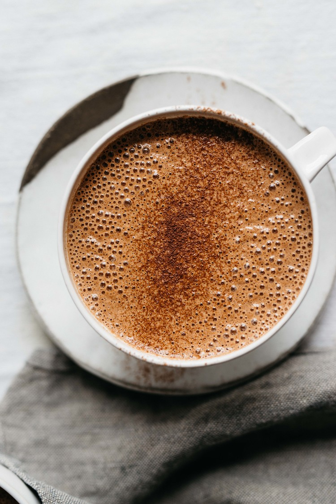
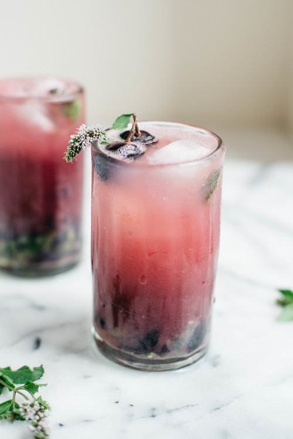
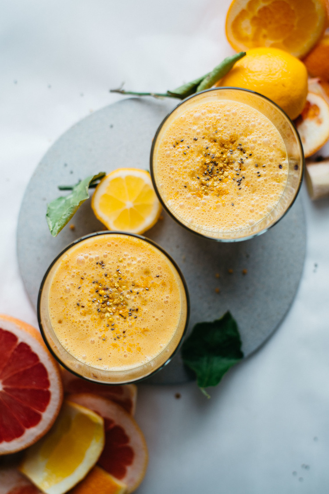
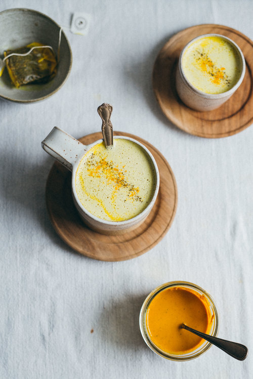

Drinks
ALMOND CHIA SEED HOT CHOCOLATE
I love using almond butter here, but you can certainly substitute it for any nut or seed butter - hazelnut butter, peanut butter, or tahini (sesame butter). there are so many different flavor profiles to go with. the portion below serves two, but if you're wanting a single serve just halve the ingredient list below.
COLD-BREWED SHISO & HIBISCUS TEA ICED LATTE 
If shiso is not available to you, you can leave it out all together. it's not the easiest herb to substitute, but if you're wanting to add an herbal note i would suggest using 1/2 cup thai basil and 1/2 cup mint in its place. i steeped the tea with a cinnamon just because i love the taste of it with the hibiscus, but you can leave that out for a less spiced flavor.
COCONUT CITRUS SUNSHINE SMOOTHIE 
Usually when i make smoothies i add as i go, which is really what i did here - there's no real math to it, so feel free to start with less and add more as you go. the result of the ingredient amounts below is a fairly fluid smoothie that thickens over time as the chia seeds activate, about 10 minute
GOLDEN DANDELION LATTE 
You can use any tea here, but i like dandelion tea which is known to soothe digestive issues, strengthen the immune system, and balance blood sugar levels. however, for a nighttime tea i do use chamomile, as well. i included some optional boosters below. i use tocos for a creamy effect, plus it's known to brighten your skin. ashwaghanda is an adaptogenic herb which aides in a slew of things including stress and anxiety. collagen peptides also aid in digestion, joint and bone health, and it's also an amino acid which is great for hair growth.
Cozy summer days at home: медовые капкейки с ромашковым кремом

You can use any tea here, but i like dandelion tea which is known to soothe digestive issues, strengthen the immune system, and balance blood sugar levels. however, for a nighttime tea i do use chamomile, as well. i included some optional boosters below. i use tocos for a creamy effect, plus it's known to brighten your skin. ashwaghanda is an adaptogenic herb which aides in a slew of things including stress and anxiety. collagen peptides also aid in digestion, joint and bone health, and it's also an amino acid which is great for hair growth.
Паста на ужин: 5 быстрых рецептов

М-м-м, ароматная паста! Что может быть лучше такого простого и при этом невероятно вкусного блюда? Ниже — 5 рецептов, готовка которых не займет у вас больше часа, что идеально для импровизированного романтического ужина в эти выходные. Buon appetito!
Лето на тарелке: 3 рецепта полезных салатов

Раз уж лета за окном в ближайшее время нам не видать, пусть хоть что-то яркое и солнечное будет на тарелке. Сегодня делимся тремя рецептами салатов, которые скрасят пасмурные дни.
Фотогеничный завтрак: японские панкейки-суфле

Примерно месяц назад в нашем Instagram мы выложили фотографию с невероятно аппетитным завтраком / десертом, и эта публикация собрала кучу восторженных комментариев, половина из которых — «что это такое» и «где такое можно попробовать». Как оказалось, это были японские панкейки-суфле, которые очень легко приготовить дома, если у вас есть миксер. Поэтому сегодня — рецепт воздушного и невероятно фотогеничного завтрака.